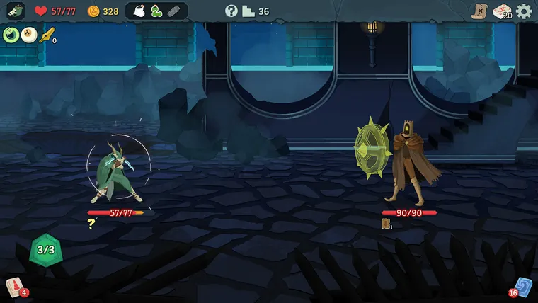
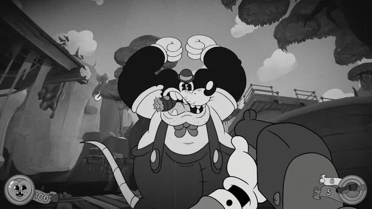
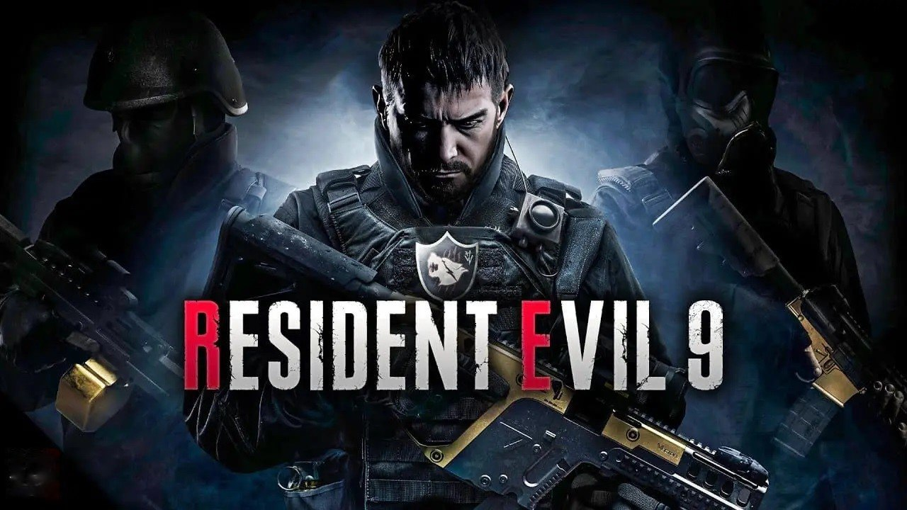

Slay the Spire 2

Сюжет. С концовки оригинала прошла тысяча лет. Монструозная башня Шпиль опять открылась, а покорять ее отправились новые герои. Им предстоит преодолеть десятки этажей, сразиться с чудовищами и отыскать сокровища.
Почему ждем. Первая Slay the Spire не стала революцией, но сильно повлияла на индустрию. Карточный рогалик от студии Mega Crit породил немало подражателей — тем интереснее посмотреть, как с развитием идей справятся авторы первоисточника.
Геймплей, судя по всему, остается прежним. Персонаж игрока будет подниматься на вершину Шпиля, а по пути убивать монстров в карточных сражениях. В первой части по мере прохождения можно было добавлять в свою колоду новые карты. Как дела будут обстоять в сиквеле — пока неизвестно.
В первой части герой встречал и дружественных существ. Они предлагали улучшить имеющиеся карты или избавиться от ненужных. Глубины процессу добавляли реликвии, наделяющие героя пассивными бонусами вроде увеличения урона.
В оригинальной Slay the Spire было еще немало тонкостей, которые делали процесс затягивающим. Какие из них окажутся в сиквеле, разработчики пока не сообщают. Зато уже обещают улучшенную графику, больше монстров и сокровищ, а также некие новые режимы. Сперва Slay the Spire 2 выйдет в раннем доступе, дата старта которого еще не объявлена.
Mouse: P.I. For Hire

Сюжет. Частный детектив зачищает нуарный город от бандитов и коррумпированных политиков. Герой не любит переговоры, поэтому для достижения своих целей использует только проверенные средства — дробовик, томми-ган и много взрывчатки.
Почему ждем. Mouse: P.I. For Hire — очередная игра в популярном нынче поджанре ретрошутера. От других похожих тайтлов ее отличает визуальный стиль в духе первых мультфильмов Disney о Микки-Маусе. Картинка здесь черно-белая, а врагами выступают мыши, ящерицы и другие антропоморфные животные.
В Mouse: P.I. For Hire ожидаются как линейные, так и более открытые уровни. Улучшения для пушек можно будет открывать при выполнении побочных заданий. Разработчики обещают богатый арсенал оружия и всевозможных усилений.
Resident Evil 9

Сюжет. Полноценного анонса Resident Evil 9 пока не было. Мы не знаем, чему посвятят игру и где развернутся ее события. Возможно, девятая номерная часть продолжит сюжет Village, вышедшей в 2021 году.
Почему ждем. Resident Evil — главная хоррор-франшиза современности. После неудачной шестой части, которая слишком сильно ушла в сторону экшен-блокбастера, Capcom вытащила серию из кризиса и перезапустила ее. Появились новые главные герои, атмосфера стала более гнетущей, даже расположение камеры изменилось — теперь мы наблюдаем за происходящим от первого лица. Сейчас Capcom успешно чередует ремейки старых частей и номерные продолжения основной серии.
Подробностей о Resident Evil 9 пока немного. По заявлениям инсайдеров, протагонистом станет Леон Кеннеди, которому на момент начала игры должно быть почти 50 лет. А еще в девятой части могут появиться элементы открытого мира. Компания как раз приспособила под него свой движок RE Engine, когда работала над экшен-RPG Dragon’s Dogma 2.
Когда именно Capcom представит Resident Evil 9, пока неизвестно. Сейчас мы знаем лишь то, что производством руководит гейм-директор седьмой части Коси Наканиси.